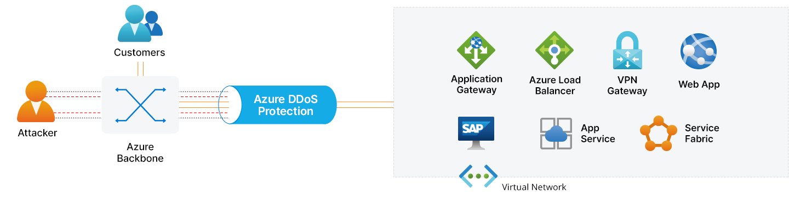
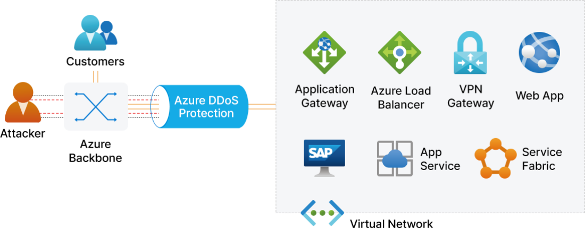
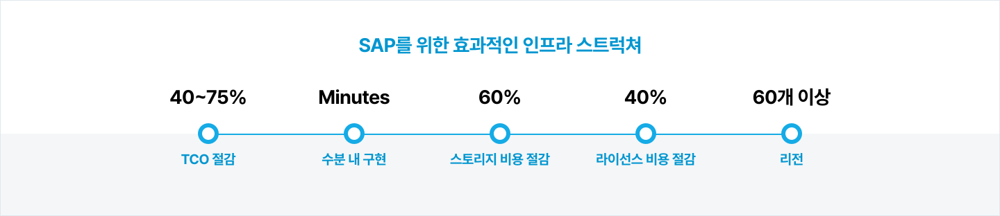
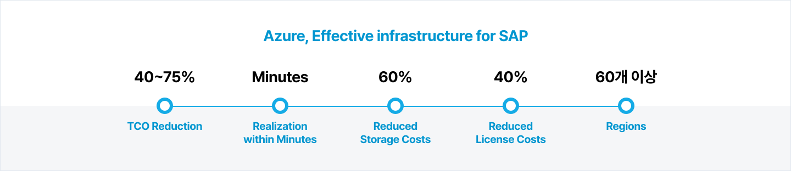
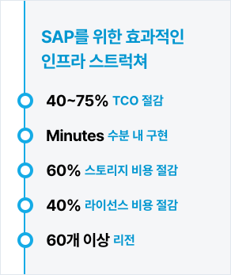
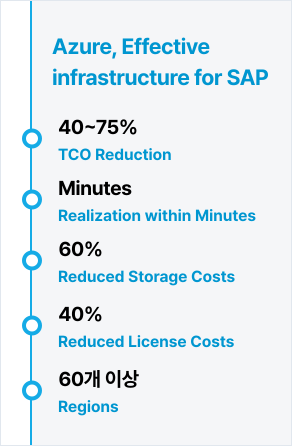
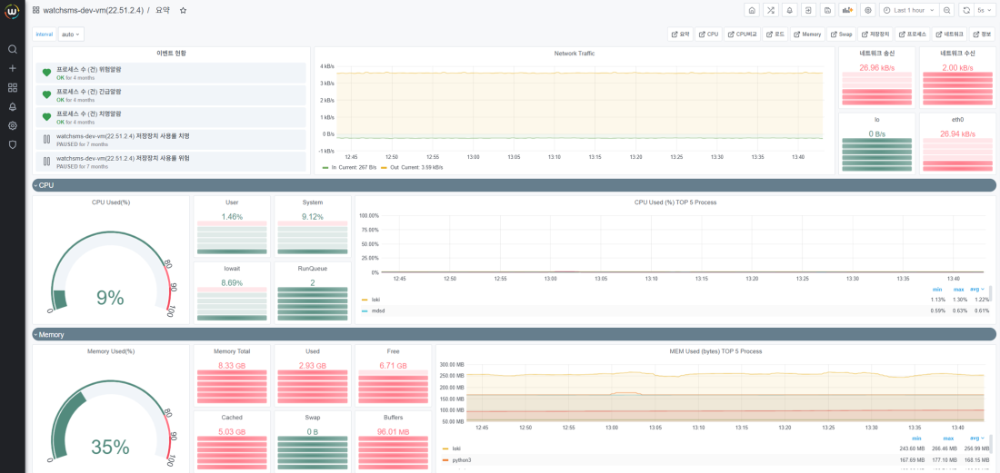

Microsoft Azure란?
글로벌 퍼블릭 클라우드 플랫폼입니다. 하이브리드·멀티클라우드 운영, 인프라 현대화, AI·IoT를 통합 지원합니다. 기업은 보안성과 글로벌 확장성, 비용 최적화를 동시에 확보하며 클라우드 전략을 실행할 수 있습니다.
Microsoft Azure
Microsoft Azure는 클라우드, 온-프레미스 및 에지에서 애플리케이션을 개발 및 운영하고 비즈니스 플랫폼까지 제공하는 통합형 클라우드 서비스입니다. Azure를 통해 진화하는 시장에 더 빠르게 적응 가능하며 더 많은 가치를 얻을 수 있습니다.
No. 1
보유하고 있습니다
95%
95%가 신뢰하는 서비스입니다
99.9%
연속성을 보장합니다
Why Choose Microsoft Azure?
완벽한 통합
Azure는 윈도우 서버, 시스템 센터 및 Active Directory 와 같은 사내 주요 프레임워크와 완벽하게 통합됩니다.
Azure Distributed Denial of Service(DDoS) 보호
애플리케이션 디자인 모범 사례와 결합된 Azure DDoS Protection은 DDoS 공격 방어에 향상된 DDoS 완화 기능을 제공합니다. 가상 네트워크에서 특정 Azure 리소스를 보호하도록 자동으로 조정됩니다.




Always-On 트래픽 모니터링
- DDoS 공격의 징후를 찾기 위해 애플리케이션 트래픽 패턴이 24시간 매일 모니터링
DDoS Protection 원격 분석, 모니터링 및 경고
- Azure DDoS Protection 표준은 DDoS를 사용하도록 설정된 가상 네트워크에서 보호되는 리소스의 각 공용 IP에 대해 자동 조정된 세 가지 완화 정책(TCP SYN, TCP 및 UDP)을 적용하여 원치 않는 네트워크 트래픽을 제거
Azure DDoS 빠른 응답
- Azure DDoS Protection 고객은 활성 액세스 상태에서 공격 중 공격 조사 및 공격 후 분석에 도움을 주는 DRR(DDoS 빠른 응답) 팀에 액세스
Azure Storage, Backup, and Security
Azure는 백업과 스토리지, 시큐리티의 각 영역에서 다양한 형태 및 기능, 서비스를 제공합니다. Azure Backup은 데이터를 전송 중이거나 휴지 상태일때 백업 환경에 대한 보안을 제공하여 랜섬웨어에 대한 백업 및 복원 계획이 가능하며 빠른 복구가 가능합니다.
기대효과
Azure 도입을 통해 비용 절감, 유연한 확장성, 고가용성 및 신뢰성, 강화된 보안, 운영 효율성, 비즈니스 민첩성, 다양한 서비스와의 원활한 통합 등 업무 생산성을 크게 향상시킬 수 있다는 점입니다.
비용 절감
- 서버와 데이터센터 구축 및 유지 비용을 절감하여 초기 인프라 비용 감소
- 사용한 만큼 지불하는 방식으로 비용 효율성을 높일 수 있음
확장성 및 유연성
- 필요에 따라 쉽게 자원을 확장하거나 축소할 수 있어 비즈니스 변화에 유연하게 대응 가능
- 전 세계에 분포된 데이터센터를 통해 글로벌 확장이 용이
비즈니스 민첩성
- 빠른 프로토타입 개발 및 배포로 시장 변화에 빠르게 대응
- AI, 머신러닝, 빅데이터 분석 등 최신 기술을 쉽게 도입하여 혁신 촉진
생태계 및 통합
- 다양한 SaaS, PaaS, IaaS 서비스와의 통합을 통해 기존 시스템과의 원활한 연동 가능
- Microsoft 365, Dynamics 365 등과의 긴밀한 통합을통해 업무 생산성 향상
웅진만의 특화된 Azure 서비스
Total Migration Service
웅진은 Microsoft의 골드파트너사로 다양한 산업 군, 규모별 고객사 IT 운영 경험을 바탕으로 고객의 요구사항을 파악하고 고객사 맞춤형 클라우드 로드맵을 제안합니다. 웅진의 클라우드 전문 인력을 통해 고객사는 운영 안정성 및 효율성 향상, 운영 비용 최적화가 가능합니다.
진단 및 분석
아키텍처 설계
효율성 향상
최적화
Azure Kubernetes Service
Azure Kubernetes Service는 애플리케이션 개발에 집중할 수 있도록 Cloud에서 인프라와 런타임 환경을 제공하여 서버 단위로 확장 가능합니다. AKS는 효율적인 리소스 활용, 더 빠른 애플리케이션 개발, 구성 관리 간소화, 확장 용이성을 지닌 가장 비용 효율적인 컨테이너 오케스트레이션 서비스입니다. 웅진은 무중단 배포 서비스를 적용하여 서비스의 연속성을 확보하고 최적의 운영 및 체계적인 클라우드 네이티브의 마이그레이션 환경을 구성합니다.
Power Platform
Power Platform을 사용하여 데이터를 분석하고 프로세스를 자동화하며, 웹 사이트, 가상 에이전트, 앱을 구축하면 혁신을 가속화하고 비용도 절감할 수 있습니다. 비즈니스에 필요한 모든 어플리케이션 커스터마이징 및 빌드를 지원합니다. Microsoft 365, Dynamics 365, Azure로 확장하여 업무 자동화와 생산성 향상이 가능합니다. 웅진은 고객 비즈니스에 대한 이해를 바탕으로 고객이 더욱 인사이트를 얻을 수 있도록 사용자 중심의 컨설팅을 제공합니다.
License Supply
웅진은 Azure 뿐만이 아니라 Microsoft 라이선스, Windows OS, Microsoft 365, Dynamics 365 등 고객이 필요한 Microsoft 라이선스를 공급합니다. 조직 규모 및 구매 선호도에 따라 맞춤화된 유연하고 경제적인 솔루션을 제공합니다. 이를 통해, 고객은 비즈니스 모델에 따라 유연하게 시스템을 확장 변형 할 수 있을 뿐만 아니라 최소 비용으로 업무 생산성과 안정성 확보가 가능합니다.
SAP on Microsoft Azure
Microsoft Azure는 모든 SAP 워크로드를 수용하는 인프라입니다. 고객에 따라 빠르게 컴퓨팅 환경을 구축할 수 있고 자동화 기반의 확장성이 유연합니다. 혁신과 통찰력을 제공하는 플랫폼을 만나보세요. 웅진의 방법론을 통해 짧은 시간안에 검증된 방법으로 시스템 구축이 가능합니다.




클라우드 모니터링 솔루션 Watchcon
웅진 Watchcon은 고객 관제 업무에 최적화된 모니터링 솔루션입니다. 인프라 자원을 모니터링하고 실시간으로 분석한 결과를 제공하여 안정적인 시스템 운영과 빠른 장애 대응을 지원합니다.
주요기능
- 클라우드 기반으로 빠른 구축
- 장애 예측 및 장애 관리 항목 제공
- 모니터링 내역 실시간 알림
- 성능 현황 및 자원 사용에 대한 분석 리포트 제공



CONTACT CENTER
Tel : 02-2119-1110
E-mail : woongjin@woongjin.com
 BMW코리아BMW Korea on DMS
BMW코리아BMW Korea on DMS
BMW코리아는 비즈니스 확대에 따른 효율적 운영을 위해 서비스의 신뢰성과 확장성이 중요해졌습니다. 클라우드의 장점인 글로벌 비즈니스의 확대, 빠른 대응 및 안정적인 운영을 위해 웅진과 함께 AWS 클라우드 기반의 DMS를 도입했습니다.
[의의]
- EKS 클러스터에 자동화되고 신뢰할 수 있는 인프라를 구현하여 보다 확장성 있는 서비스 제공
- 판매 시스템 업그레이드 및 안정성 보장